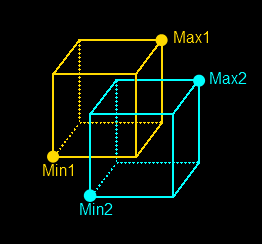
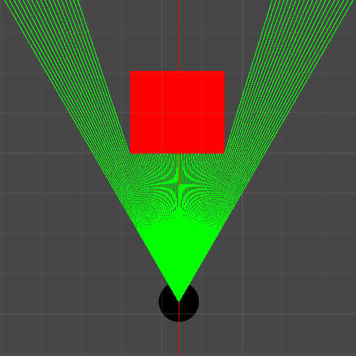
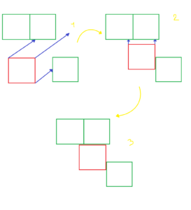

Introduction
Cet article est un devlog parlant de l’impl√©mentation d’un syst√®me de collision pour mon moteur de voxels Mavoxel üòâ.
Le principe d’une collision est assez simple : si une entit√© est en mouvement, on va s’assurer que la position d’arriv√©e de cette derni√®re ne chevauche pas celle d’un autre objet.
Bien s√ªr, ici nous somme dans un environnement 3D et nous traitons des volumes, donc il ne s’agit pas simplement de v√©rifier la position d’arriv√©e de l’entit√©, mais l’enti√®ret√© de l’espace qu’elle prend.
AABB
√âtant donn√© qu’il existe une infinit√© de positions possibles dans un volume, nous allons simplifier la repr√©sentation de cet espace en utilisant une bo√Æte align√©e avec les axes, syst√®me de collision appel√© AABB pour Axis Aligned Bounding Box. Il existe d’autre repr√©sentation possible mais cette derni√®re nous convient particuli√®rement bien dans le cadre de notre moteur de voxels.

Avec ce syst√®me, chaque entit√© poss√©dera sa boite de collision AABB qui se d√©placera en m√™me temps qu’elle, et pour v√©rifier les collisions avec les autres objets il suffira de v√©rifier leurs boite de collision entrent en intersection.

Algorithme
Super, √ßa para√Æt simple ! Mais il y a un probl√®me : √Ä quel moment devons-nous v√©rifier une possible collision ? Apr√®s un d√©placement, vous me direz et je vous r√©pondrais que oui, mais c’est un peu plus compliqu√© que cela. Imaginez un objet qui se d√©place sur un terrain fait de plusieurs cubes. Cet objet poss√®de une vitesse de 2 en avant (comprenez qu’il se d√©place d’une distance de 2 cubes en avant). Apr√®s le d√©placement, il se retrouvera donc avanc√© de 2 cubes, et nous allons donc v√©rifier si il y a une collision sur son nouvel emplacement. Mais qu’en est-il s’il y avait un cube entre sa position de d√©part et celle d’arriv√©e ?
Vous devez maintenant comprendre le probl√®me. Bien s√ªr, dans la plupart des cas, aucun objet n’est cens√© pouvoir se d√©placer de 2 cubes en 1 frame, mais il existe plusieurs situations o√π cela peut arriver et qui sont m√™mes assez connues dans l’univers du Jeu vid√©o, qui utilisent tr√®s souvent ce syst√®me de collision. Par exemple, si la machine du joueur freeze, l’accumulation de temps √©coul√© entre 2 frames durant ce freeze va devenir tr√®s grande, et comme la plupart des jeux utilisent le temps entre les frames pour calculer la vitesse des d√©placements (pour √©viter qu’un joueur avec plus de FPS puisse aller plus vite qu’un joueur avec moins de FPS), il serait donc possible qu’un gros freeze permette de donner une v√©locit√© assez grande √† un objet pour pouvoir ignorer des collisions sur son chemin. Ce probl√®me √©tant tr√®s connu des d√©veloppeurs de jeu vid√©o, quelques fixes sont des fois mis en place pour √©viter de telles situations, comme par exemple en donnant une borne maximale au temps √©coul√© entre 2 frames. Mais du coup avec un tel fix, un joueur qui freeze trop pourrait voir l’horloge de son jeu se d√©caler lentement par rapport √† une personne qui ne freeze pas, chose que l’on veut √©viter (nous voulons que chaque joueur se retrouve dans la m√™me situation apr√®s les m√™mes inputs, ind√©pendamment de leurs machines).
Malheureusement, il n’existe pas beaucoup de solutions document√©es en ligne pour r√©gler ce probl√®me.
En effet, le syst√®me que je vous ai pr√©sent√© au-dessus est en fait assez satisfaisant dans une tr√®s grande majorit√© des cas, et m√™me pour mon projet en r√©alit√© ! Donc pourquoi m’emb√™ter ? En plus, cette solution a le bon go√ªt d’√™tre tr√®s peu complexe pour la machine (je parle ici de complexit√© algorithmique).
Mais je n’ai pas envie de me satisfaire d’un syst√®me de collision que je trouve imparfait, c’est pourquoi j’ai d√©cid√© de chercher une solution !
Apr√®s pas mal de temps de r√©flexion, j’ai commenc√© √† penser √† une id√©e : et si j’utilisais le Ray-Casting ?
Ray-Casting
L’id√©e derri√®re le Ray-Casting est assez simple : on part d’une position et on tire un rayon dans une direction donn√©e et on s’arr√™te lorsque notre rayon rencontre un obstacle.

C’est un algorithme qui est assez souvent utilis√© pour faire de l’affichage et calculer de mani√®re assez pr√©cise si oui ou non un objet est visible pour l’utilisateur. Cela est aussi utilis√© pour voir si une surface est √©clair√©e ou non par une source lumineuse.
Bref, ici l’id√©e serait de s’en servir pour savoir si oui ou non notre entit√© va rencontrer un autre objet.
Et cela tombe bien ! Il se trouve que j’ai d√©j√† impl√©ment√© un algorithme de Ray-Casting pour mon moteur (code disponible ici) ! Actuellement, il ne me servait qu’√† d√©terminer les objets que l’utilisateur pointe du regard (l’objet au centre de son √©cran) et rien ne m’emp√™che de le r√©utiliser dans mon autre cas de figure.
Probl√®me : Le Ray-Casting est fait pour tirer un rayon partant d’un point, pas d’un volume (ici notre bo√Æte de collision AABB). Il faut trouver une solution pour adapter l’algorithme √† un volume… Et bien pourquoi ne pas effectuer un Ray-Casting mais en partant de chacun des sommets de notre bo√Æte de collision ?
C’est donc ce que j’ai d√©cid√© d’impl√©menter ! Mais dans quel ordre ? Comment fait-on un Ray-Casting de plusieurs points en m√™me temps ? Eh bien, l’id√©e que j’ai s√©lectionn√©e est d’effectuer le Ray-Casting sur chacun des points de la boite de collision (8 points ici). On pourrait aussi optimiser cela en ne v√©rifiant que 7 points, car on sait qu’il y en aura toujours un qui sera couvert par les 7 autres, mais c’est un d√©tail. Ensuite, on retient la collision la plus proche obtenue avec ces 8 Ray-Castings et on recommence en adaptant les entr√©es, c’est-√†-dire les positions de d√©part des Ray-Castings et la direction :
- Position de d√©part : On ajoute le d√©placement effectu√© jusqu’√† la collision √† toutes les positions.
- Direction : On ajoute le d√©placement effectu√© jusqu’√† la collision et on met √† 0 la direction dans laquelle on a rencontr√© la collision.
Et √©tant donn√© que nous sommes en 3D et que nous avons “seulement” 3 axes maximum avec lesquels nous pouvons rencontrer une collision avant que notre direction ne devienne un vecteur nul, on sait que nous n’allons r√©p√©ter cet algorithme que 3 fois dans le pire des cas.
Nous allons √† chaque collision sauvegarder le d√©placement effectu√© jusqu’√† la collision, et cet algorithme retournera donc la somme de tous ces d√©placements avec le vecteur direction restant (s’il n’est pas nul).
Voici un petit sch√©ma pour que vous puissiez essayer de visualiser l’algorithme :

Ici, les cubes verts représentent notre environnement, le cube rouge représente notre boîte de collision et les flèches bleues représentent les Ray-Castings effectués !
Bon, dit comme √ßa, √ßa a l’air simple, mais en pratique, √ßa donne quoi ? Eh bien, apr√®s environ trois semaines de gal√®re en tout genre, principalement due √† des probl√®mes de nombres flottants, de calcul de longueur de vecteurs et d’intersection entre les voxels, l’algorithme fonctionne !
Pour faire simple, les principaux probl√®mes que j’ai rencontr√©s pendant ces trois semaines et leurs solutions :
-
Que se passe-t-il si l’on commence un Ray-Casting entre deux voxels sur un axe ? Et bien le voxel ayant la coordonn√©e la plus “grande” sera arbitrairement s√©lectionn√©. C’est un comportement qu’on veut √† tout prix √©viter, car cela veut dire qu’on n’est pas s√ªr dans cette situation de bien commencer l√† o√π l’on veut le Ray-Casting. J’ai donc ajout√© une v√©rification pour d√©tecter cette situation, et si elle est rencontr√©e, on va bien pr√©ciser que le prochain voxel se trouve √† une distance de 0 et on va reculer notre position de 1 dans le sens inverse de notre vecteur de direction. On va aussi rajouter une distance minimale √† un voxel pour ne pas coller nos bo√Ætes de collisions √† ces derniers.
-
Un autre souci que j’ai rencontr√© est une erreur basique de calcul de longueur d’un vecteur. En fait, j’estimais mal la distance parcourue pendant un Ray-Casting, ce qui entra√Ænait des situations o√π je ne d√©tectais pas de collisions et me retrouvais avec des coordonn√©es √† l’int√©rieur de voxels, chose que je ne pouvais pas g√©rer par la suite. Mon erreur √©tait que j’additionnais mes d√©placements sur tous les axes, et je consid√©rais ensuite cette valeur comme la distance parcourue, sauf que cela ne fonctionne pas ainsi avec des vecteurs. Si j’avance de 1 en x et 1 en y, je n’aurai pas avanc√© de 2 mais d’environ 1,41… Donc pour calculer cela, rien de mieux que de stocker tous les d√©placements sur les axes dans un vecteur et ensuite calculer la longueur de ce dernier pour obtenir la distance parcourue !
Et voil√†, avec tout √ßa, on dispose d’un algorithme de d√©tection de collision entre nos entit√©s et notre monde fonctionnel !
Voici une vidéo démo du résultat :
Bonus
Maintenant que le système de collision est implémenté, il est assez simple de rajouter un petit système de simulation de gravité et de saut ! Voici une petite démo de ce que ça donne :
N’hésitez pas à me contacter si vous avez des questions / suggestions.